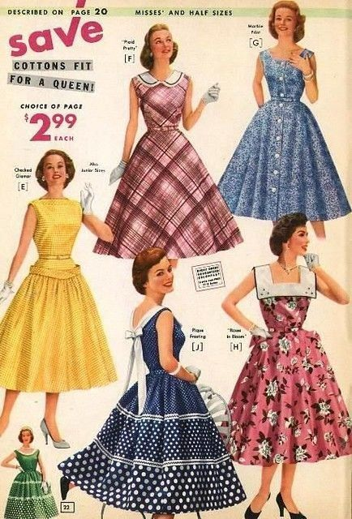
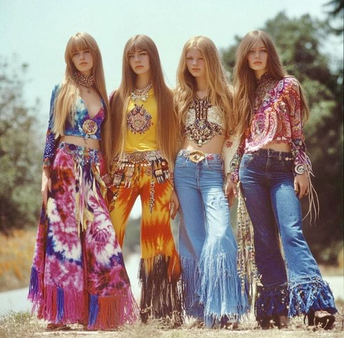

Bij Episode geloven we in de duurzaamheid van vintage mode.
De collectie bestaat uit stukken uit verschillende decennia, elk met hun eigen unieke verhaal en stijl.
Onze vintage kleding is niet alleen stijlvol, maar ook milieuvriendelijk.
Door te kiezen voor tweedehands kleding, draag je bij aan een duurzamere toekomst.
Waar wij in uitsteken vergeleken met andere duurzame kledingwinkels is prijs, ons doel is om echt te focussen op duurzaamheid en een betaalbare prijs te maken zodat meer klanten bij ons komen winkelen.
De Geschiedenis van Vintage Mode
Vintage mode heeft een rijke geschiedenis die teruggaat tot het begin van de 20e eeuw. Elk decennium heeft zijn eigen unieke stijl en trends die de mode van die tijd weerspiegelen.
1950s: Rock 'n' Roll en Elegantie
De jaren 1950 zagen de opkomst van rock 'n' roll en een hernieuwde focus op elegantie en vrouwelijkheid. Denk aan volle rokken, petticoats en de iconische stijl van Marilyn Monroe.
1970s: De Hippie Beweging
De jaren 1970 werden gekenmerkt door de hippiebeweging, met een nadruk op vrijheid en zelfexpressie. Mode uit deze tijd omvatte wijde pijpen, explosie van kleur, bloemenprints en handgemaakte accessoires.
2000's: Y2K en Streetwear
De jaren 2000, ook wel bekend als de Y2K-periode, brachten een mix van futuristische en retro stijlen. Lage taillebroeken, crop tops, en sportieve streetwear waren populair. Deze periode zag ook de opkomst van logomania, met grote merken die prominent aanwezig waren op kledingstukken.